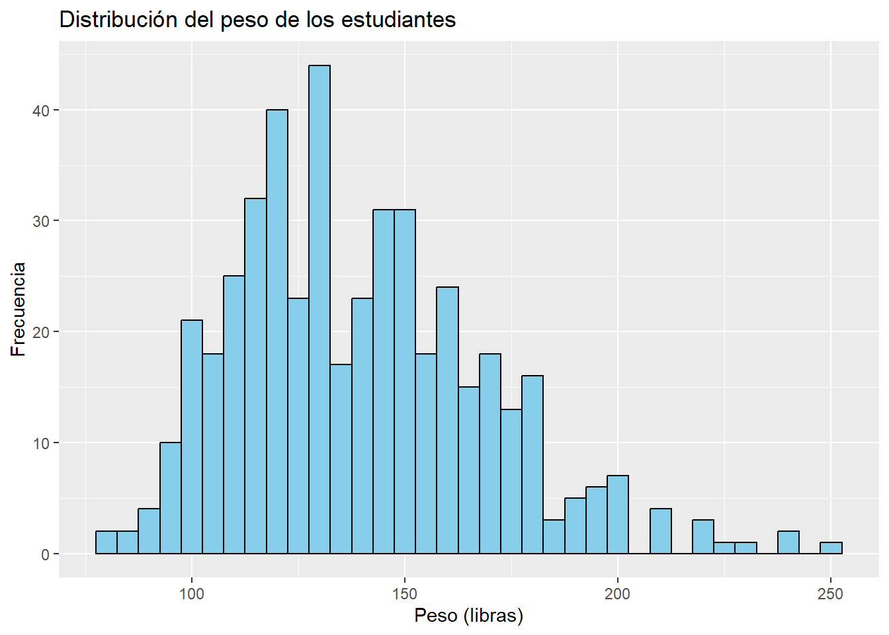

# EJEMPLO DE CREACIÓN DE OBJETOS NUMÉRICOS
edad <- 21
altura_m <- 1.70
peso_lb <- 150
lb_kg <- 2.20INTRODUCCIÓN AL ENTORNO DE PROGRAMACIÓN R Y SU APLICACIÓN EN EL ANÁLISIS ESTADÍSTICO DE DATOS
¿Qué es R?
R es un lenguaje de programación y entorno computacional especializado en análisis estadístico y visualización científica, diseñado para investigación reproducible (Ihaka & Gentleman, 1996).

¿Qué hace tan especial a R para el análisis estadístico?
Código Abierto: Sin costos de licencia, ideal para proyectos académicos (R Core Team, 2023).
Extensible: Hasta 2023 existen más de 19,000 paquetes disponibles en CRAN (Comprehensive R Archive Network) especializados en añadirle nuevas funciones para resolver necesidades especificas usando R, la funcionalidad de estos paquetes va desde hacer mejores gráficos de una manera sencilla hasta facilita procesos estadísticos (CRAN, 2023).
¿Qué es RStudio?
RStudio es un Entorno de Desarrollo Integrado (IDE) que optimiza el flujo de trabajo en R, destacándose por su sistema de proyectos y herramientas para reproducibilidad (Allaire et al., 2022).

Reproducibilidad, Replicabilidad ¿Qué tienen que ver con R y RStudio?
El 64% de los investigadores enfrentan dificultades para replicar estudios previos debido a documentación insuficiente (Baker, 2016).
Situación: Usas Excel y/o infostat. Tus cálculos están en celdas ocultas, y los gráficos se ajustan manualmente.
Resultado: Nadie, ni tú en 6 meses, podrá repetir exactamente tu análisis.
Solución: Realizar el análisis de los datos y la construcción de los gráficos aprovechando las herramientas que nos provee R para generar un script donde se documenta el paso a paso que se siguió para realizar el análisis y llegar a las conclusiones.

Definición formal de reproducibilidad y replicabilidad
La reproducibilidad (capacidad de obtener los mismos resultados con los mismos datos y métodos) y la replicabilidad (consistencia de hallazgos en nuevos contextos) son fundamentales para la credibilidad científica (National Academies of Sciences, Engineering, and Medicine, 2019).
Beneficios de la adopción de R para la Ciencia
Transparencia: Código accesible para revisión por pares (The Turing Way Community, 2023).
Eficiencia: Reutilización de métodos en nuevos estudios (Gentleman & Temple Lang, 2007).
Credibilidad: Cumplimiento de estándares FAIR (Wilkinson et al., 2016).
¿Cómo obtengo R y RStudio para mi uso personal?
Instalar R y RStudio en nuestro ordenador es bastante sencillo. Para ello primero debemos descargar una versión de R estable, en el momento de elaboración de este material la ultima versión de R es R 4.4.2, sin embargo, utilizar la ultima versión de R nos puede llegar a dar problemas al utilizar paquetes los cuales no han recibido actualizaciones para poderse utilizar en esa versión de R es por ello que se recomienda instalar la ultima versión estable conocida de R. Con base a lo anteriormente explicado en este curso utilizaremos la versión de R 4.3.1.
El enlace para ir al repositorio donde se encuentran todas la versiones de R es el siguiente: https://cran.r-project.org/bin/windows/base/old/. En esta página encontraremos un directorio con todas las versiones de R que alguna vez han existido para descargar una versión en específico, le damos clic al nombre de la versión y nos abrirá un directorio con toda la documentación de esa versión de R, a nosotros nos interesa el archivo con una terminación -win. exe la cual al darle clic automáticamente nos descargara el instalador de la versión de R.
Para descargar la ultima versión de RStudio nos dirigimos a la Página oficial de RStudio donde al dar clic sobre el botón “Download RStudio Desknop for Windows” la pagina iniciara la descarga del instalador de RStudio. En caso de que nuestro dispositivo no tenga como sistema operativo Windows en la misma pagina en la sección siguiente se encuentran las respectivas versiones de RStudio para todos los sistemas operativos con los que es compatible.
La instalación de los dos programas debe realizarse en un orden específico para evitar conflictos y errores. Primero debemos instalar la versión de R y posteriormente instalamos RStudio. Cabe resaltar que en un mismo dispositivo pueden convivir más de una versión de R y dentro de la configuración de RStudio es posible seleccionar cuál versión sera con la que trabajaremos.
Trabajo práctico para familiarizarnos con el software
Aprender desde cero a usar un software como R y RStudio. Es como cuando nos iniciamos en la cocina: por más que leamos recetas, solo dominaremos los sabores y técnicas al encender la estufa y experimentar. Según la teoría del aprendizaje experimental de Kolb (1984), internalizamos conceptos cuando hacemos, no solo cuando escuchamos. Imaginemos que preparamos una salsa: si la sal es excesiva (error), ajustamos la próxima vez (prueba), y así hasta lograr el equilibrio (éxito). De la misma forma, al programar en RStudio, cada línea de código es nuestro ingrediente. Si un gráfico no se renderiza, depuramos el error; si un cálculo falla, corregimos la sintaxis. Este ciclo de prueba-error, respaldado por el constructivismo (Hmelo-Silver et al., 2007), transforma funciones abstractas en habilidades concretas. No memorizamos funciones: los saboreamos en la práctica, como los chefs que aprenden a medir ‘a ojo’ la pimienta. La pantalla es nuestra cocina, y cada script, un plato que perfeccionamos.

Empecemos creando un nuevo script de R
Cuando abrimos por primera vez RStudio nos encontramos con la siguiente interfaz:

Normalmente nos toca crear un script nuevo para trabajar cuando entramos para ello existen dos rutas habituales y estas son:
- Manualmente: Desplegamos la pestaña “File” de la cinta de opciones ubicada en la parte superior izquierda del programa, sucesivamente seleccionamos la opción “New File” y después seleccionamos el tipo de archivo que para nuestro caso es “R Script”.

- Utilizando atajos de teclado: Para crear un nuevo script se puede utilizar la combinación de teclas Ctrl+Shift+N como un atajo de teclado, el cual nos creara automáticamente un script nuevo.
Guardemos nuestro script para evitar perder nuestro trabajo
Una vez ya hemos creado el script en donde trabajaremos este es un lienzo en blanco en donde desarrollaremos el análisis de nuestros datos, para evitar perder nuestro progreso por cualquier inconveniente es recomendable guardarlo desde el principio. Para ello nuevamente desplegamos la pestaña “File” y seleccionamos la opción “Save as…” esta opción nos abrirá el menú predeterminado para seleccionar dónde guardar nuestro script y con qué nombre.

Recomendaciones para la organización de archivos
Así como en la cocina separamos los utensilios, los ingredientes frescos y las especias en cajones etiquetados, en RStudio necesitamos un sistema claro para guardar nuestros scripts, datos y resultados. Un proyecto desorganizado es como una alacena caótica: perderemos tiempo buscando archivos y arriesgaremos errores. Para evitarlo, sigamos estas recomendaciones de organización:
Nombres descriptivos y consistentes:
❌
analisis1.R,datos_finales.xlsx✅
20231015_analisis_rendimiento_maiz.R,datos_suelo_antigua_2023.csv
Evitar espacios y caracteres especiales:
Usar guiones bajos (
_) o medios (-) en vez de espacios:❌
analisis suelo.R✅
analisis_suelo.R
Incluir fechas en un formato estandarizado (YYYY-MM-DD):
2023-10-15_importacion_datos.R
Crear una carpeta en nuestro ordenador para cada proyecto
Con este sistema, cualquier colaborador (o nuestro “yo” del futuro) encontrará todo al primer vistazo, como un chef que sabe dónde está cada ingrediente en su cocina. La organización no es burocracia: es la base de la eficiencia y la reproducibilidad.
Iniciemos conociendo los objetos en R
En R, todo es un objeto. Un objeto es una estructura que almacena datos y tiene atributos (nombre, tipo, etc.).
Recomendaciones para nombrar objetos:
Sensibles a mayúsculas: pH ≠ ph.
No usar espacios:
❌ rendimiento ha
✅ rendimiento_ha
Nombres descriptivos y consistentes:
- A diferencia de cuando nombramos archivos acá es recomendable que el nombre sea breve pero que al mismo tiempo nos brinde la mayor cantidad de información posible. Cuando esto no es viable por la especificidad de los datos o cualquier otra razón podemos guardar un archivo con la metadata de nuestra base de datos en la misma carpeta como parte de la documentación que facilitara la comprensión del análisis a cualquier colaborador (o nuestro “yo” del futuro).
¿Cómo creo un objeto?
Para la creación de cualquier objeto en R existen dos operadores de asignación los cuales son: “=” y “<-” estos operadores cumplen la misma función. Sin embargo, el signo de igualdad no se recomienda utilizarlo debido a que puede llegar a causar conflictos al usar operadores lógicos en nuestro codigo es por ello que para fines profesionales se ha estandarizado el uso de “<-” como operador de asignación en R.
La estructura de sintaxis utilizada en R para crear cualquier objeto es la siguiente:
| NOMRE DEL OBJETO | <- | Información que contendrá nuestro objeto |
| Siguiendo las recomendaciones para su nomenclatura | Vector de asignación | Los objetos en R pueden contener distintos tipos de información ya sea texto, números… |
Nota: Para visualizar en la consola el valor de un objeto se escribe el nombre asignado y se ejecuta la linea de código.
Tipos de objetos
En R, cada objeto puede almacenar distintos tipos de datos. Sin embargo, solo pueden almacenar un tipo de dato en cada objeto. Los tipos de objetos existentes en R son:
Objetos numéricos
Un objeto numérico es aquel que almacena datos con números enteros o decimales, estos nos sirven para almacenar información de variables cuantitativas como por ejemplo: Edad, Altura, Peso. También nos puede servir para guardar factores de conversión para convertir entre distintas unidades de medida por ejemplo el factor de conversión entre libras y kilogramos es 2.2. A continuación vamos a poner en práctica la creación de este tipo de objetos creando el objeto correspondiente a cada uno de los ejemplos dados utilizando nuestra información:
Para ejecutar el código que acabamos de escribir existen dos maneras las cuales son:
Manualmente: Nos ubicamos en la linea de código que queremos ejecutar y damos clic sobre la opción “Run” que se encuentra en la esquina superior derecha del área del script.
Usando atajos de teclado: Seleccionamos la/las lineas de código que queremos ejecutar y presionamos la combinación de teclas Ctrl+Enter.
Indistintamente de cuál de los métodos utilicemos veremos como en la consola aparecerán las lineas de código que hayamos ejecutado y al mismo tiempo en el Environment (Ambiente) nos aparecerán los nombres de nuestros objetos creados y su contenido.
Nota: En R si antes de un texto colocamos el símbolo numeral (#) el software lo interpreta como un comentario, estas lineas no se ejecutaran. Sin embargo, son muy útiles para explicar ¿Qué hicimos? en cada sección de nuestro código, para que sea más fácil de entender para nuestro “yo” del futuro.
Objetos tipo carácter o texto
Los objetos de tipo carácter nos sirven para almacenar variables cualitativas, este tipo de objeto almacena el texto entre comillas (” “), habitualmente se utiliza para almacenar nombres y categorías no estructuradas como por ejemplo: nuestro color favorito o el nombre de nuestra comida favorita. A continuación vamos a poner en práctica la creación de este tipo de objetos creando el objeto correspondiente a cada uno de los ejemplos dados:
# EJEMPLO DE CREACIÓN DE OBJETOS TIPO CARACTER
color_fav <- "negro"
comida_fav <- "pizza"Objetos de tipo factor
Los objetos de tipo factor nos sirven para almacenar variables categóricas estructuradas con niveles definidos. Usualmente se utiliza para almacenar escalas o categorías definidas como por ejemplo: una escala de calificaciones (aprobado o reprobado) o el estado civil de una persona (casado, soltero o divorciado). Para crear este tipo de objetos utilizamos la función “factor()” para indicarle a R que este objeto no es de tipo carácter ya que al igual que los objetos tipo carácter los niveles de nuestras categorías se ingresan entre comias. A continuación vamos a poner en práctica la creación de este tipo de objetos creando el objeto de tipo factor estado civil y sexo con nuestra información.
# EJEMPLO DE CREACIÓN DE OBJETOS TIPO FACTOR
estado_civil <- factor("soltero")
sexo <- factor("masculino")Nota: Los objetos de tipo factor son muy útiles cuando trabajamos con bases de datos complejas ya que estos nos sirven para clasificar y categorizar variables para su análisis
Objetos lógicos
Los objetos de tipo lógico también conocidos como los termómetros de condiciones nos sirven para aplicar filtros y se crean normalmente como el resultado de una comparación en donde estuvo involucrado un operador lógico (en la siguiente sección hablaremos de los distintos tipos de operadores que existen en R). Su nombre de termómetros de condiciones es más acertado con los ejemplos tipicos de su uso. Para el caso de nuestros objetos anteriormente creados podemos crear un objeto de tipo lógico comparando si nuestra edad cumple con la condición necesaria para ser considerados mayores de edad que para el caso de Guatemala esta condición seria que nuestra edad sea mayor a 18 años. A continuación vamos a poner en práctica la creación de este tipo de objetos creando el objeto del ejemplo antes descrito.
# EJEMPLO DE CREACIÓN DE UN OBJETO TIPO LOGICO
mayoria_de_edad <- edad >18 ; mayoria_de_edad[1] TRUENota: si al acabar la asignación de un objeto colocamos un punto y coma seguido del nombre del objeto R nos devolverá en la consola el valor del objeto esto es útil cuando el objeto es el resultado de una operación. Para el ejemplo anterior podemos ver como en la consola nos aparece el valor de nuestro objeto que para este caso al cumplirse la condición el valor es TRUE (verdadero).
¿Y si, quiero un objeto con dos o más valores?
Imaginemos que estamos organizando la información de un salón de clase: no trabajamos con un solo alumno, sino con un grupo de estudiantes, cada uno con información diferente como nombre, edad, peso en libras y sexo. En R, los vectores y data frames son nuestras herramientas para manejar colecciones de datos de manera estructurada y eficiente. A continuación, exploraremos cómo crear y gestionar estos objetos.
Un vector en R es un objeto el cual esta compuesto por un número determinado de elementos del mismo tipo para su creación en R se utiliza la función “c()” y dentro de los paréntesis se colocan todos los elementos que formaran parte de nuestro vector separados por comas. A continuación elaboraremos un ejemplo de como crear un vector para cada uno de los distintos tipos de objetos que hay en R utilizando datos de un salón de clases.
# EJEMPLO DE CREACIÓN DE VECTORES
# VECTORES DE TIPO CARACTER
nombre <- c("Juan", "Pedro", "Luis", "Ana", "Andrea")
# VECTORES DE TIPO NUMÉRICO
edad <- c(18, 17, 21, 20, 19)
peso_lb <- c(125.20, 130.5, 145.6, 120.1, 110.5)
# VECTORES DE TIPO CATEGORICO
sexo <- factor(c("H", "H", "H", "M", "M"))
# VECTORES DE TIPO LOGICO
mayoria_de_edad <- edad >=18Tengo muchos vectores… ¿Cómo los puedo agrupar para tener una mejor organización?
Cuando trabajamos con múltiples vectores relacionados (por ejemplo, datos de estudiantes en un salón de clase), la mejor manera de organizarlos es utilizando estructuras de datos integradas en R que permiten agrupar vectores de manera coherente. Las dos opciones principales son los data frames y las listas. A continuación, exploraremos cómo usarlas:
Data Frames: Tablas estructuradas para análisis
Un data frame es una estructura tabular (similar a una hoja de Excel) que combina vectores de igual longitud pero de distintos tipos (numéricos, caracteres, factores, etc.). Es ideal para bases de datos organizadas, donde cada fila representa una observación y cada columna una variable.
Creemos un data frame con nuestros vectores
Para la creación de un data frame se emplea la función data.frame(), los argumentos que se colocan en esta función son los nombres de todos los vectores que queremos unir en un mismo data frame separados por comas, como se muestra a continuación:
# EJEMPLO DE CREACIÓN DE UN DATAFRAME
datos_estudiantes <- data.frame(nombre, edad, mayoria_de_edad, peso_lb, sexo)
datos_estudiantes nombre edad mayoria_de_edad peso_lb sexo
1 Juan 18 TRUE 125.2 H
2 Pedro 17 FALSE 130.5 H
3 Luis 21 TRUE 145.6 H
4 Ana 20 TRUE 120.1 M
5 Andrea 19 TRUE 110.5 MVentajas de los data frames
Permiten manipulación y análisis estadístico directo.
Compatibles con funciones de visualización.
Fáciles de exportar/importar.
Listas: Colecciones flexibles de objetos
Una lista es una estructura que puede contener cualquier tipo de objeto (vectores, matrices, otros data frames, funciones, etc.), incluso si tienen longitudes o tipos diferentes. Son útiles para organizar resultados complejos o grupos heterogéneos de datos.
Más adelante cuando queramos guardar los resultados de nuestros analisis estadisticos aprenderemos más sobre las listas. Por el momento solo trabajaremos con data frames.
Comparación entre data frames y listas
| Data Frame | Lista |
|---|---|
| Vectores de igual longitud. | Objetos de cualquier tipo o longitud. |
| Ideal para análisis estadístico. | Ideal para almacenar resultados mixtos. |
| Columnas con nombres definidos. | Elementos pueden nombrarse o no. |
¿Qué pasa si mis datos ya los tengo almacenados en un archivo de delimitado por comas (CSV) o excel?
Imaginemos que los datos son ingredientes guardados en recipientes: los archivos CSV y Excel son como frascos etiquetados que R puede abrir para extraer información. Para ello tenemos que importarlos así, evitando el tedioso copiar/pegar manual, y mantener la reproducibilidad de nuestro análisis.
Archivos delimitados por comas (.csv)
Estructura: Archivo de texto plano donde cada valor está separado por una coma (ej: nombre, edad, altura, peso).
Características técnicas:
Sin formato: No admite colores, fórmulas o múltiples hojas.
Universal: Lo abre cualquier editor de texto o programa (Bloc de notas, Excel, R).
Ligero: Ideal para datos simples y transferencias rápidas.
Ejemplo de cómo importar un archivo .csv a R
Para importar un data frame que se encuentra almacenado en formato .csv a R se emplea la siguiente sintaxis para la función: “read.csv(”nombre del documento”, header = (indicar si tiene o no encabezado), sep =”(indicar que tipo de separador utilizamos)”)”
Instalar los paquetes necesarios para esta tarea
#1 INSTALAMOS LOS PAQUETES DE R NECESARIOS PARA ESTA TAREA if (!require("rstudioapi")) install.packages("rstudioapi") # Lo usaremos para establecer nuestro directorio de trabajo facilmenteEstablecemos la carpeta de nuestro proyecto como directorio de trabajo
#2 ESTABLECER NUESTRO DIRECTORIO DE TRABAJO setwd (dirname(rstudioapi::getActiveDocumentContext()$path))Importamos nuestro dataframe
#3 IMPORTAMOS NUESTRO DATAFRAME datos<-read.csv("datos_estudiantes_2002.csv", header = TRUE, sep = ";")
Nota: La siguiente linea de código “setwd (dirname(rstudioapi::getActiveDocumentContext()$path))” es una”receta mágica” que establece automáticamente la misma carpeta donde tenemos guardado nuestro script como nuestro directorio de trabajo.
Archivos de excel (.xlsx)
Estructura: Archivo binario con múltiples hojas, fórmulas, gráficos y formato (ej: colores, fuentes).
Características técnicas:
Complejo: Diseñado para análisis interactivos y presentaciones.
Propietario: Desarrollado por Microsoft, pero compatible con herramientas como R.
Pesado: Puede ralentizarse con grandes volúmenes de datos (>1 millón de filas).
Ejemplo de cómo importar un archivo .xlsx a R
Para importar un data frame que se encuentra almacenado en formato .xlsx a R se emplea la siguiente sintaxis para la función: “read_excel(”nombre del documento”, col_names = (indicar si tiene o no encabezado), sheet =”nombre de la hoja”)”
Instalar los paquetes necesarios para esta tarea
#1 INSTALAMOS LOS PAQUETES DE R NECESARIOS PARA ESTA TAREA if (!require("rstudioapi")) install.packages("rstudioapi") # Lo usaremos para #establecer nuestro directorio de trabajo facilmente if (!require("readxl")) install.packages(("readxl")) # Este paquete nos sirve #para que R pueda importar archivos de excelEstablecemos la carpeta de nuestro proyecto como directorio de trabajo
#2 ESTABLECER NUESTRO DIRECTORIO DE TRABAJO setwd (dirname(rstudioapi::getActiveDocumentContext()$path))Importamos nuestro dataframe
#3 IMPORTAMOS NUESTRO DATAFRAME datos_2002 <- read_excel("datos_estudiantes_2002.xlsx", col_names = TRUE, sheet = "datos")
¿Cómo acceder a las variables de un Data frame?
Para acceder a la información guardada como una columna en un data frame, no podemos acceder de la misma manera que lo hacíamos con los vectores para esta tarea accedemos usando el operador $: La “Llave Maestra”. Este operador accede directamente a una columna/variable del data frame por su nombre. Para esto usamos la sintaxis siguiente: (nombre del data frame)$(nombre de la columna)
Ejemplo :
# Acceder a la columna "edad" del data frame datos_estudiantes
datos_estudiantes$edad [1] 18 17 21 20 19Uso común:
Ideal para operaciones rápidas o cuando trabajas con pocas variables.
Funciona con cualquier funcion u operador con el que estemos trabajando.
La importancia de un directorio de trabajo
Imagina que el directorio de trabajo es como el “punto de partida” en un mapa: es la carpeta donde R buscará automáticamente tus archivos (datos, scripts) y guardará tus resultados. Si no lo defines, es como intentar cocinar sin saber dónde están los ingredientes: perderás tiempo buscando rutas manualmente y el código dejará de funcionar si mueves el proyecto a otra computadora.
¿Por qué establecer un directorio de trabajo?
Reproducibilidad: Garantiza que tu código funcione en cualquier computadora, sin depender de rutas como
C:/Usuario/MiPC....Organización: Evita errores del tipo “archivo no encontrado” al mantener todo (datos, scripts, resultados) en una estructura clara.
Eficiencia: Simplifica el acceso a archivos. En vez de escribir rutas completas, usas nombres simples.
La “Receta Mágica”
setwd(dirname(rstudioapi::getActiveDocumentContext()$path))¿Qué hace esta línea?
rstudioapi::getActiveDocumentContext()$path: Obtiene la ruta del script actual (ej:C:/proyecto/scripts/analisis.R).dirname(): Extrae la carpeta padre de esa ruta (ej:C:/proyecto/scripts/→C:/proyecto/).setwd(): Establece esa carpeta como directorio de trabajo.
Beneficios clave
Portabilidad: Si mueves toda la carpeta del proyecto a otra ubicación, el código sigue funcionando.
Automatización: No necesitas ajustar manualmente rutas al compartir el proyecto.
¿Qué pasa si no se establece?
Errores constantes: R buscará archivos en una ubicación predeterminada (ej: Documentos), no donde están tus datos.
Código no reproducible: Si alguien más ejecuta tu script, tendrá que modificar manualmente todas las rutas.
📌 Consejo: Ejecuta getwd() para verificar tu directorio actual. Si usas la línea automática, ¡asegúrate de guardar el script antes de ejecutarla!
Operadores en R ¿Es R otra calculadora pero más difícil de utilizar?

Imaginemos que R es un taller de herramientas completo: no solo tiene destornilladores y martillos (operadores básicos), sino también taladros, niveles láser y equipos de soldadura (funciones avanzadas, paquetes y estructuras de datos). Cada herramienta tiene un propósito único, y combinarlas permite construir soluciones robustas. A continuación, exploraremos cómo estas “herramientas” se integran en un flujo de trabajo profesional.
Operadores básicos: Los “Destornilladores” de R
Definición: Realizan operaciones matemáticas o lógicas sencillas, similares a una calculadora, pero con potencial escalable.
Operadores aritméticos
| Operador | Acción |
|---|---|
+ |
Suma |
- |
Resta |
* |
Multiplicación |
/ |
División |
^ |
Potencia |
Operadores lógicos
| Operador | Acción |
|---|---|
> |
Mayor que |
< |
Menor que |
== |
Igualdad |
!= |
Desigualdad |
Respondiendo nuestra pregunta inicial
Sí, R puede sumar y restar como una calculadora, pero su verdadero poder está en integrar operadores con funciones, visualizaciones y estructuras de datos para resolver problemas complejos. Como un carpintero que transforma madera en muebles, R transforma datos en conocimiento.
Experimentemos usar operadores en R
A partir de acá, para nuestro ejercicio de aplicación, vamos a utilizar el data frame que importamos de excel, este objeto lo identificamos con el nombre “datos_2002”, esta base de datos incluye 11 variables obtenidas de una encuesta realizada a estudiantes de la universidad de San Carlos de Guatemala en el año 2002, como ejercicio de aplicación vamos a crear nuevas variables a partir de las variables ya existentes. Las nuevas variables que vamos a crear serán: Peso_Kg, IMC, Mayoría_edad (variable lógica).
Solución del ejercicio:
Peso_Kg <- datos_2002$PESO_lbs / lb_kg
IMC <- Peso_Kg / (datos_2002$TALLA)^2
Mayoria_edad <- datos_2002$EDAD >= "18"Paquetes de R: Recursos Compartidos por la Comunidad para mejorar nuestros análisis estadísticos
Así como un chef no se limita a sal y pimienta, en R no te conformas con funciones básicas. Los paquetes son esos ingredientes secretos (ggplot2, dplyr, tidyr) que convierten un análisis simple en un banquete de insights.

¿Qué son los paquetes en R?
Definición: Los paquetes son colecciones de funciones, datos y documentación que amplían las capacidades básicas de R, como agregar especias a una receta. Son desarrollados por la comunidad y permiten resolver problemas específicos:
- Ejemplo: ggplot2 (gráficos profesionales) y dplyr (manipulación de datos).
Metáfora: “Si R es una cocina básica, los paquetes son licuadoras, batidoras y especias exóticas que transforman ingredientes crudos (datos) en platillos sofisticados (análisis).”
Orígenes comunes:
CRAN: El “supermercado oficial” de paquetes (más de 19,000 opciones).
GitHub: La “tienda de ingredientes artesanales” para paquetes en desarrollo.
¿Cómo instalar paquetes en R?
La función utilizada en R para instalar paquetes desde CRAN (lo habitual) es install.packages() pero al instalar un paquete este no se carga automáticamente, debemos de cargarlo a nuestro entorno de trabajo para empezar a usarlo. Para esta tarea utilizamos la función library(). A continuación vamos a hacer este ejemplo con el paquete que utilizaremos para elaborar gráficos en la siguiente sección este se llama ggplot2.
install.packages("ggplot2")
library("ggplot2")Consejo: Con fines de limpieza de nuestro código y facilitar su reproducibilidad es recomendable colocar al principio de nuestro script una sección dedicada a la instalación y carga de los paquetes que utilizamos en nuestro análisis.
La “receta mágica” para instalar paquetes
if (!require("nombre del paquete")) install.packages("nombre del paquete")
¿Qué hace esta linea?
require("nombre del paquete"): Esta función intenta cargar el paquete especificado. Si el paquete está instalado, lo carga en la sesión actual y devuelveTRUE. Si el paquete no está instalado, devuelveFALSE.!require("nombre del paquete"): El signo de exclamación (!) niega el resultado de la funciónrequire(). Por lo tanto, esta expresión seráTRUEsi el paquete NO está instalado o NO puede ser cargado.if (...) install.packages("nombre del paquete"): Esta es una estructura condicional. Si la condición entre paréntesis esTRUE(es decir, si el paquete no está instalado o no puede ser cargado), entonces se ejecutainstall.packages("nombre del paquete"), que descarga e instala el paquete desde el repositorio CRAN.
En resumen, esta línea de código:
Primero intenta cargar el paquete con
require()Si el paquete está instalado, lo carga y continúa con el código
Si el paquete NO está instalado, entonces lo instala automáticamente con
install.packages()y luego lo carga.
Esta es una técnica muy eficiente porque:
Evita reinstalar paquetes que ya están disponibles.
Asegura que el código funcione incluso si el usuario no tiene el paquete instalado.
Hace el código más portable entre diferentes computadora.
Automatiza la gestión de dependencias
Para usar esta receta con un paquete específico, simplemente reemplazas “nombre del paquete” con el nombre real del paquete. Por ejemplo:
if (!require("ggplot2")) install.packages("ggplot2")Esta línea intentará cargar ggplot2 y, si no está instalado, lo instalará automáticamente.
¿Cómo saber qué paquete usar para cada tarea?
En R, la elección del paquete adecuado para una tarea específica puede marcar la diferencia entre un análisis eficiente y uno complicado. Dado que R cuenta con más de 19,000 paquetes disponibles en CRAN, es importante conocer cuáles son los más utilizados y recomendados para cada tipo de tarea. A continuación, se presenta una guía práctica para identificar y seleccionar el paquete adecuado según las necesidades del análisis.
Categorías principales de paquetes
Los paquetes en R se pueden clasificar en diferentes categorías según su propósito. Aquí se presentan las más comunes y los paquetes más destacados en cada una:
Manipulación de datos:
Paquetes como
dplyrytidyrson ideales para filtrar, transformar, agrupar y reorganizar datos.Ejemplo: Calcular el promedio de edad por sexo o transformar datos de formato ancho a largo.
Visualización de datos:
ggplot2es el estándar para crear gráficos personalizados y de alta calidad.Ejemplo: Crear gráficos de barras, histogramas o scatterplots para explorar relaciones entre variables.
Análisis estadístico básico:
Las funciones base de R (
stats) incluyen herramientas para realizar pruebas t, ANOVA y cálculos de medias.Ejemplo: Comparar tratamientos de un experimento mediante un ANOVA.
Análisis estadístico avanzado:
Paquetes como
agricolaeque es útil para diseños experimentales en agronomía.Ejemplo: Analizar efectos aleatorios en un diseño de bloques completos al azar.
Criterios para elegir un paquete
Al seleccionar un paquete, es importante considerar los siguientes aspectos:
Propósito: ¿Qué tarea específica necesitas realizar? Por ejemplo, si deseas manipular datos,
dplyres una excelente opción; si necesitas gráficos avanzados,ggplot2es ideal.Popularidad y soporte: Los paquetes más populares suelen tener mejor documentación, tutoriales y una comunidad activa. Por ejemplo,
ggplot2ydplyrson ampliamente utilizados y cuentan con numerosos recursos en línea.Compatibilidad: Algunos paquetes están diseñados para integrarse con otros. Por ejemplo,
dplyryggplot2forman parte del ecosistema tidyverse, lo que facilita su uso conjunto.Documentación: Un paquete bien documentado es más fácil de aprender y utilizar. Revisa la documentación oficial y los ejemplos proporcionados.
Recursos para identificar paquetes
Si no estás seguro de qué paquete usar, puedes recurrir a los siguientes recursos:
CRAN Task Views: Una colección de listas temáticas en CRAN que agrupan paquetes según su propósito. Por ejemplo, la Task View de “Agriculture” incluye paquetes relacionados con análisis de suelos, cultivos y experimentos agrícolas.
- Enlace: CRAN Task Views
Cheatsheets: Las hojas de referencia rápida (cheatsheets) de RStudio son una excelente manera de explorar las capacidades de paquetes populares como
ggplot2,dplyrytidyr.
- Enlace: [Cheatsheets de RStudio](https://www.rstudio.com/resources/cheatsheets/)Foros y comunidades: Plataformas como Stack Overflow, RStudio Community y GitHub son útiles para buscar recomendaciones y ejemplos de uso.
Libros y tutoriales: Recursos como R for Data Science de Hadley Wickham y Garrett Grolemund ofrecen una introducción práctica a los paquetes más utilizados en el ecosistema tidyverse.
Manipulación de datos con dplyr y tidyr
La manipulación de datos es una tarea esencial en el análisis estadístico, ya que permite transformar, organizar y preparar los datos para su análisis. En R, los paquetes dplyr y tidyr del ecosistema tidyverse son herramientas clave para realizar estas tareas de manera eficiente y reproducible. A continuación, exploraremos las principales funciones de estos paquetes, el concepto de pipes y la utilidad de transformar datos entre formatos ancho y largo, con ejemplos prácticos, incluyendo aplicaciones en el ámbito agrícola.
¿Qué es dplyr?
dplyr es un paquete diseñado para realizar operaciones comunes de manipulación de datos, como filtrar, seleccionar columnas, agrupar y resumir datos. Su sintaxis es intuitiva y está optimizada para trabajar con data frames y tibbles (una versión mejorada de los data frames).
Operaciones básicas con dplyr
Filtrar filas: Selecciona observaciones que cumplen una condición específica.
# Filtrar estudiantes que miden más de 1.90m estudiantes_altos <- datos_2002 %>% filter(TALLA > 1.9)Seleccionar columnas: Extrae variables específicas de un data frame.
# Seleccionar solo las columnas de peso en libras y talla seleccion <- datos_2002 %>% select(PESO_lbs, TALLA)
Crear nuevas columnas: Añade variables calculadas.
# Crear una nueva columna con el pesoo en kilogramos datos_2002 <- datos_2002 %>% mutate(PESO_Kg = PESO_lbs / 2.2)
Agrupar y resumir datos: Calcula estadísticas por grupo.
# Calcular la edad promedio por facultad promedio_edad <- datos %>% group_by(FACULTAD) %>% summarize(edad_promedio = mean(EDAD, na.rm = TRUE))
¿Qué son las pipes (%>%)?
El operador pipe (%>%) es una herramienta clave en el tidyverse que permite encadenar funciones de manera legible y eficiente. En lugar de anidar funciones, el pipe pasa el resultado de una función como entrada a la siguiente.
Ejemplo sin pipes:
promedio <- summarize(group_by(datos_2002, FACULTAD), edad_promedio = mean(EDAD, na.rm = TRUE)) Ejemplo con pipes:
# Calcular la edad promedio por facultad
promedio_pipe <- datos_2002 %>% group_by(FACULTAD) %>% summarize(edad_promedio = mean(EDAD, na.rm = TRUE)) El uso de pipes mejora la legibilidad del código, especialmente en flujos de trabajo complejos.
Visualización de datos: Introducción a gráficos básicos con ggplot2
La visualización de datos es una herramienta fundamental para explorar patrones, comunicar resultados y validar supuestos en el análisis estadístico. En R, el paquete ggplot2 es ampliamente utilizado debido a su flexibilidad y capacidad para crear gráficos de alta calidad.
¿Qué es ggplot2?
ggplot2 es un paquete de R diseñado para crear gráficos personalizados y profesionales. Su enfoque se basa en una lógica de capas, donde cada capa representa un componente del gráfico (datos, tipo de gráfico, etiquetas, etc.). Esto permite construir gráficos complejos de manera modular y reproducible.
Estructura básica de ggplot2
La estructura general de un gráfico en ggplot2 sigue esta sintaxis:
ggplot(data = DATOS, aes(x = VARIABLE_X, y = VARIABLE_Y)) +
GEOM_FUNCION() +
labs(title = "Título del gráfico",
x = "Etiqueta eje X",
y = "Etiqueta eje Y")data: El conjunto de datos que se usará para el gráfico.aes(): Define las variables estéticas (ejes, colores, tamaños, etc.).GEOM_FUNCION(): Especifica el tipo de gráfico (e.g., barras, puntos, líneas).labs(): Añade etiquetas y títulos.
Ejemplo 1: Crear un histograma
Un histograma es útil para explorar la distribución de una variable numérica.
# Crear un histograma de la variable "peso"
ggplot(data = datos_2002, aes(x = PESO_lbs)) +
geom_histogram(binwidth = 5, fill = "skyblue", color = "black") +
labs(title = "Distribución del peso de los estudiantes",
x = "Peso (libras)",
y = "Frecuencia") 
geom_histogram(): Crea el histograma.binwidth: Define el ancho de las barras.
Ejemplo 2: Crear un scatterplot
Un scatterplot permite explorar la relación entre dos variables numéricas.
# Relación entre peso y edad
ggplot(data = datos_2002, aes(x = EDAD, y = PESO_lbs)) +
geom_point(color = "blue", size = 3) +
labs(title = "Relación entre edad y peso",
x = "Edad (años)",
y = "Peso (libras)") 
geom_point(): Dibuja los puntos en el gráfico.
Ejemplo 3: Crear un boxplot
Un boxplot es útil para comparar la distribución de una variable numérica entre grupos.
# Comparar el peso por sexo
ggplot(data = datos_2002, aes(x = SEXO, y = PESO_lbs, fill = SEXO)) +
geom_boxplot() +
labs(title = "Distribución del peso por sexo",
x = "Sexo",
y = "Peso (libras)") 
fill: Colorea las cajas según el grupo.
Exportación de resultados: Guardar gráficos y tablas
Una vez que se han generado gráficos o tablas, es importante exportarlos para su uso en informes o presentaciones. R ofrece funciones para guardar resultados en formatos como PNG, PDF o CSV.
Guardar gráficos con ggsave()
La función ggsave() permite guardar el último gráfico generado.
# Guardar un gráfico en formato PNG
ggsave("grafico_peso.png", width = 8, height = 6, dpi = 300)
# Guardar un gráfico en formato PDF
ggsave("grafico_peso.pdf", width = 8, height = 6) widthyheight: Dimensiones del gráfico.dpi: Resolución del gráfico (300 es ideal para publicaciones).
Guardar tablas en formato CSV
Para exportar un data frame como archivo CSV, se utiliza la función write.csv().
# Guardar el data frame en un archivo CSV
write.csv(datos_2002, "datos_estudiantes.csv", row.names = FALSE) row.names = FALSE: Evita incluir los índices como una columna adicional.
Material de apoyo
Referencias
Allaire, J. J., Xie, Y., & McPherson, J. (2022). R Markdown: The Definitive Guide. Chapman & Hall/CRC. https://www.taylorfrancis.com/books/mono/10.1201/9781138359444/markdown-yihui-xie-allaire-garrett-grolemund
Ihaka, R., & Gentleman, R. (1996). R: A Language for Data Analysis and Graphics. Journal of Computational and Graphical Statistics, 5(3), 299–314.
R Core Team. (2023). R: A Language and Environment for Statistical Computing. R Foundation for Statistical Computing. https://www.Rproject.org
Baker, M. (2016). 1,500 scientists lift the lid on reproducibility. Nature, 533(7604), 452–454. https://doi.org/10.1038/533452a
National Academies of Sciences, Engineering, and Medicine. (2019). Reproducibility and replicability in science. National Academies Press. https://doi.org/10.17226/25303
The Turing Way Community. (2023). The Turing Way: A handbook for reproducible, ethical and collaborative research. https://the-turing-way.netlify.app
Gentleman, R., & Temple Lang, D. (2007). Statistical analyses and reproducible research. Journal of Computational and Graphical Statistics, 16(1), 1-23. https://doi.org/10.1198/106186007X178663
Wilkinson, M. D. et al. (2016). The FAIR Guiding Principles for scientific data management and stewardship. Scientific Data, 3(1), 160018. https://doi.org/10.1038/sdata.2016.18
Kolb, D. A. (1984). Experiential learning: Experience as the source of learning and development. Prentice Hall.
Hmelo-Silver, C. E., Duncan, R. G., & Chinn, C. A. (2007). Scaffolding and achievement in problem-based and inquiry learning: A response to Kirschner, Sweller, and Clark (2006). Educational Psychologist, 42(2), 99–107. https://doi.org/10.1080/00461520701263368